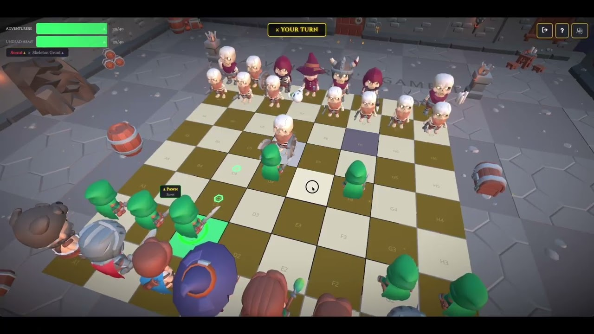

★ LLM evaluation
Stop Testing Your AI. Start Measuring It.
Unit-test thinking doesn't work for LLM systems. What to do instead: baselines, LLM-as-judge, and regression gates.
Most of my career has been spent architecting data pipelines and building full-stack applications, with as much care for the UX as for the plumbing underneath. These days it's a lot of AI too.

A mage and a barbarian on a chessboard. Stockfish scores the position; an LLM explains what your move just cost you, and remembers what it's already taught you.
Four systems from the day job, each shipped only after it got past a gate: an eval suite, a human review step, a public funnel.
One engineer migrated four legacy repositories with an AI agent doing the coding. Most of the effort went into scaffolding before the agent wrote anything.
We put an AI champion on each team and coached instead of writing policy. Teams proved it out on their own backlogs.
Every U.S. state writes its learning standards differently. We built a graph that answers "is this aligned to our standards?" as a query instead of months of manual review.
An intake funnel that made AI experiments cheap to run. When ideas get rejected, everyone can see why.
An agentic system for content discovery across distributed systems, and why an agent works better than search when the content is spread across five systems. Related: the Neptune post and the standards story.
Each of these left me with opinions strong enough to write down. Those are next.
The opinions, written down. The recurring one: stop demoing AI and start measuring it.
Unit-test thinking doesn't work for LLM systems. What to do instead: baselines, LLM-as-judge, and regression gates.
How I orchestrated Claude Code through a four-repository migration: the scaffolding, the supervision model, and what the agent got wrong along the way.
Streaming, session state, cost ceilings, and what happens when the model doesn't answer. The demo is on YouTube.
When bringing per-item AI work in-house beats paying a vendor: one pipeline pattern, evaluation suites as the launch gate, models right-sized per task.
The ideas I'm least sure about get built as toys first. Those are below.
Nights-and-weekends versions of the same questions, built to see where ideas break before I bet a team on them. You can play most of them.
3D battle-chess: an RPG party fights skeleton warriors while an AI mentor teaches you the game. Stockfish evaluates the position and the LLM explains the reasoning; it also keeps track of what it's already taught you. Blog-post prize, Amazon Nova AI Hackathon.
Built on AWS AgentCore: tool use, grounding, and the operational pieces most demos skip.
Streams answers with session state, cost ceilings, and graceful degradation. The article goes through the architecture.
Multiplayer snake-meets-trivia on serverless AWS (WebSockets, real-time state). Also an experiment in how far an AI coding assistant could carry a full build.
A privacy-first AI financial planner with local storage and multi-currency support. Built for my own household.
That's the work. The rest — Mumbai to Waterloo, twins, coffee — is below.
I started my career in Mumbai, moved to New York, and eventually settled in Waterloo, Canada. Viacom, then Renaissance Learning, then Scholastic. Along the way I've been a consultant, tech lead, architect, and manager; my current job is all four at once: leading Business Acceleration, Scholastic's education AI & platform team, and still writing code most days.
Role-playing games are a lifelong habit that finally leaked into the work — my latest side project puts a mage and a barbarian on a chessboard. The rest of life is twins, increasingly serious coffee equipment, and occasionally flying a drone over Waterloo.
Say hi — karthiks3000@gmail.com, or find me on LinkedIn. I'm happiest talking about evals, agents, and why an AI demo isn't the same thing as an AI product. There's a PDF resume if you ever need the formal version.